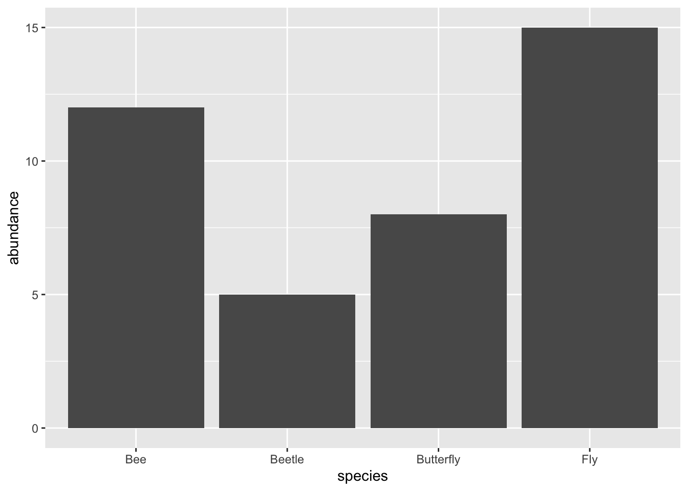

x <- 23Workshop 1: Intro to data science and R
Entomology 3927 - Fall 2026
Frontmatter 1️⃣
A tour of the R studio IDE and GUI 💻
In it’s simplest out-of-box form, R Studio is composed of four different sections, called panes:

- Source: This pane is where you will write/view R scripts. Some outputs (such as if you view a dataset using View()) will appear as a tab here.
- Console/Terminal/Jobs: This is actually where you see the execution of commands. This is the same display you would see if you were using R at the command line without RStudio. You can work interactively (i.e. enter R commands here), but for the most part we will run a script (or lines in a script) in the source pane and watch their execution and output here. The “Terminal” tab give you access to the BASH terminal (the Linux operating system, unrelated to R). RStudio also allows you to run jobs (analyses) in the background. This is useful if some analysis will take a while to run. You can see the status of those jobs in the background.
- Environment/History: Here, RStudio will show you what datasets and objects (variables) you have created and which are defined in memory. You can also see some properties of objects/datasets such as their type and dimensions. The “History” tab contains a history of the R commands you’ve executed R.
- Files/Plots/Packages/Help/Viewer: This multipurpose pane will show you the contents of directories on your computer. You can also use the “Files” tab to navigate and set the working directory. The “Plots” tab will show the output of any plots generated. In “Packages” you will see what packages are actively loaded, or you can attach installed packages. “Help” will display help files for R functions and packages. “Viewer” will allow you to view local web content (e.g. HTML outputs).
Setting up your DevEnv (Development Environment)
RStudio is a highly customizable program that will let you nerd out to your heart’s content. Feel free! A few things that I suggest you customize right away will help you (and your collaborators/me) to debug and read your code.
- After launching RStudio, go to Tools —> Global options.
- Select the “Appearance” tab on the side, and select an editor theme that you like best. I highly recommend one where comments (text preceded by a #) are some shade of gray. This helps them be obvious without being obnoxiously bright and distracting.
- Next, select the “Code” tab on the side, and then select the “Display” panel. Enable:
These things will help you better catch syntax errors with missed parentheses, and help you and me quickly see where you’re editing in your R files.
Basic programming in R 🧑🏻💻
R is a functional programming language that is used to operate on objects. Objects are any piece of data that we store in memory, and perform different operations on, either using arithmetic or one or more R functions (things like sum() or mean()).
For example, we can create a variable called x and assign it a value of 23. In the console, enter the following:
The object we create here, is 23, but we use a variable, x, to point to that object in memory so that we can easily reference/use it in our various bits of code. The <- is the assignment operator, and it tells R we want to create a new variable and store it in memory so that we can access it later. You’ll see the variable, x, pop up in your Environment pane after you run the code. If you were to just type in 23 without the operator, R acts like a giant calculator and just spits out the answer, in this case, 23. We can do things with this object, like math:
x + 3 # Add 3 to x[1] 26x * 40 # Multiple x by 40[1] 920x %% 3 # Return the remainder of x / 3 (modulo) [1] 2Or use it inside of functions. An R function has three key properties:
- Functions have a name (e.g.
dir,getwd); note that functions are case sensitive! - Following the name, functions have a pair of ()
- Inside the parentheses, a function may take 0 or more arguments. The arguments include inputs to the function, and settings that modify how the function behaves.
mean(x) # Calculates mean of our variable x[1] 23mean(x, na.rm = TRUE) # Calculates mean of our variable x, but also removes any NA values[1] 23sum(c(x, x, x)) # Calculates the sum of a vector containing three x variables[1] 69Note that all of the above lines of code spit out answers in the console, but don’t create any additional variables in our global environment. That’s because we haven’t use the assignment operator to tell R, “Hey, I’d like to save this bit of information so that I can use it later”.
Packages 📦
Scripts vs. console 🖥️
So far, we’ve just been using console to write code. This works, but as you may notice, we have no working history of our different lines of code. All the stuff we’ve entered is there, but we can’t edit it without re-entering it. When we write R code, we almost always use scripts. These take two basic forms: a simple text file (a .r script) or, a type of Markdown file (.Rmd) called an R Notebook. The next-generation of these files are called Quarto files (basically the same thing as .Rmd, but with added support for additional programming languages). There are advantages to each of these formats, and either one can work for conducting data analysis in any form. In general, this is what I recommend.
.rfiles: use these to build stand-alone, complete automated scripts or custom functions that you may want to source either outside of R Studio (i.e., via a Terminal), or in different.Rmdor.rfiles..Rmd(or.qmd) files: use these when you want to combine code, interactive plots, and written narrative into a single file that can be processed into publishable reports (either via .html or PDF).
R Markdown and R Notebooks (now, Quarto documents!)
In general, I highly recommend using .Rmd (.qmd) notebooks to conduct your data analyses. This allows us to practice literate programming, combining code, narrative, figures, etc. into a seamless document that has a logical structure from to bottom. These documents necessarily center the output or results of your work, not just the code the produced it. This format allows you to more easily capture the how (i.e., your code) and the why and what you were thinking as you conducted your analysis.
These files are essentially specialized Markdown files, which is a light-weight way to write formatted text using a plain-text editor (i.e., R Studio or Positron). You can create headings, embed images, format in specialized ways using html or other style sheets (if you so choose), add code chunks that run and produce output
NoteFun Fact!
This document you’re reading, and the entire website for this course, was built using Quarto and R (as was my lab website)! By harnessing the power of this tool, you can create super effective and light-weight online portals for your work to communicate your methods and findings.
R Notebook structure
There are basically 3 main parts to any .rmd or .qmd file:
- An (optional) YAML header surrounded by:
--- - Chunks of R code surrounded by ```
- Text mixed with simple text formatting like #
headingand *italics*
Here’s an example:
Here is a simple Quarto document:
---
title: "My First Quarto Analysis"
author: "Your Name"
format: html
---
# Example quarto document
This is a simple Quarto document.
## Create the data
```{r}
data <- data.frame(
species = c("Bee", "Butterfly", "Fly", "Beetle"),
abundance = c(12, 8, 15, 5)
)
data
```
## Make a plot
```{r}
library(ggplot2)
ggplot(data, aes(x = species, y = abundance)) +
geom_col()
```When you are finished and want to export this to a report, you could render it as .html where it will look like this:
Example quarto document
This is a simple Quarto document.
Create the data
data <- data.frame(
species = c("Bee", "Butterfly", "Fly", "Beetle"),
abundance = c(12, 8, 15, 5)
)
data species abundance
1 Bee 12
2 Butterfly 8
3 Fly 15
4 Beetle 5Make a plot
library(ggplot2)
ggplot(data, aes(x = species, y = abundance)) +
geom_col()
TipSuggestion:
Go peek at the GitHub repository for this site to see how the various pages are constructed as .qmd files and compare that to the rendered, website version. You’ll get a sense of how the various formatting features of markdown work.
Project and code organization 💾
Keeping your work organized is an extremely important aspect of making your projects reproducible and a great way to help future you or collaborators make sense of what you’ve done. You can conduct your work and analyses in a piecemeal, chaotic fashion, but the goal of this class is to instill consisent, clear protocols to follow for all projects so that we properly document and allow our work to be easily reproduced/checked. The first step toward this is always using R Studio Projects (this is similar to the folder-based system that many other IDEs like VSCode and Positron use).
R Studio projects basically act as a starting point for all of your work on a given…well, project. They allow us to:
- Save data, files, variables, packages related to a specific analysis project/paper
- Easily pickup where you last left off
- Collaborate by integrating tools such as version control using git (which we’ll cover more in the coming weeks)
Projects also maintain a consistent file structure and relative pathing system so that your various scripts can easily locate dependent files, packages, data, etc. This concept is called a working directory. You can manually set this, but it’s not advised as you’ll need to reset it every single time you run a script or bit of code, and it will create headaches for anyone/machine that tries to run the code on another computer. By creating a project, you create an enclosed ecosystem that you can move around at will and everything will still work because the working directory is set relative to the project file (here, directory is just the technical term for a computer folder).
We’ll create a single R Studio project for this class, and manage all of the weekly tasks within that project. Later, we’ll initiate a git repository inside the project so that we explicitly track our files using version control, and link this to GitHub repo so our work will be (1) publically accessible and (2) backed up on a cloud-based service.
- To create a project, go to the File menu, and click New Project….
- If you already have a folder on your computer where you’d like to start your project, select Existing Directory and navigate to select that folder. If you want to create a new directory, select New Directory, and then select New Project. For the “Directory Name”, enter:
ent3927-5927_fall-2026. For “Create project as subdirectory of”, click Browse… and then click Choose and navigate to whatever folder you want your project (and thereby project directory) to live inside. - For now, ignore the git and renv toggle boxes. We’ll discuss those more later.
- Click Create Project. In the “Files” tab of the lower right pane, you should see an R Studio project file,
ent3927-5927_fall-2026.Rproj. R Studio projects end with the “.Rproj” file extension.
Project directory structure
A key to making projects easy to navigate is to use a consistent directory organizational structure. This way, code, data, reports, and other components of your project live in the same places and it reduces how much you need to huntfor things/remember where they are. It also (you’ll notice a theme here) makes it easy for collaborators or folks looking through your project to locate things if they’re organized in a logical fashion.
my-r-project/
│
├── .gitignore # Excludes large, generated, or sensitive files from Git
├── my-r-project.Rproj # RStudio Project settings file
├── README.md # Project overview, setup instructions, and metadata
├── project_notes.qmd. # Digital notebook that has to-do lists, notes, etc.
├── renv.lock # (Optional) Snapshot of package dependencies for reproducibility
│
├── data/ # All project data
│ ├── raw/ # Unmodified original data (Read-Only)
│ └── processed/ # Cleaned, transformed, or intermediate data outputs
│
├── code/ # Custom R scripts and functions
│ ├── 01_data_cleaning.qmd # Data importing and wrangling scripts
│ ├── 02_analysis.qmd # Core analysis and statistical models
│ └── utils.R # Custom functions shared across scripts
│
├── output/ # Non-code objects generated by analysis
│ ├── figures/ # Exported plots (e.g., .png, .pdf)
│ └── tables/ # Exported summary tables (e.g., .csv, .rds)
│
├── docs/ # Final reports, Quarto docs, manuscripts, or presentation slides
├── index.qmd # Main Quarto report file
└── references.bib # Citation bibliographyEventually, it’s possible that you can keep your entire project from post-data collection onward in a single environment and even write your manuscruipts using Quarto.
R Project workspace and .Rdata
As you create objects and conduct your analyis, your environment will accumulate more and more stuff. As new R users, you likely consider these objects to be “real” things that you can save and work with later. In fact, R Studio has nifty tools that allow you to explicitly save this global environment as an .Rdata folder
Comments 📝
You have already seen comments in the code above. R ignores any text after a
#. The purpose of these comments are to explain the why of your code, not the how or the what. To quote R for Data Science:You can also leave little breadcrumbs for yourself as reminders of what exactly some output is, or why you’ve changed the argument of a function to a certain value. Comments are invaluable to future you and collaborators: use them!